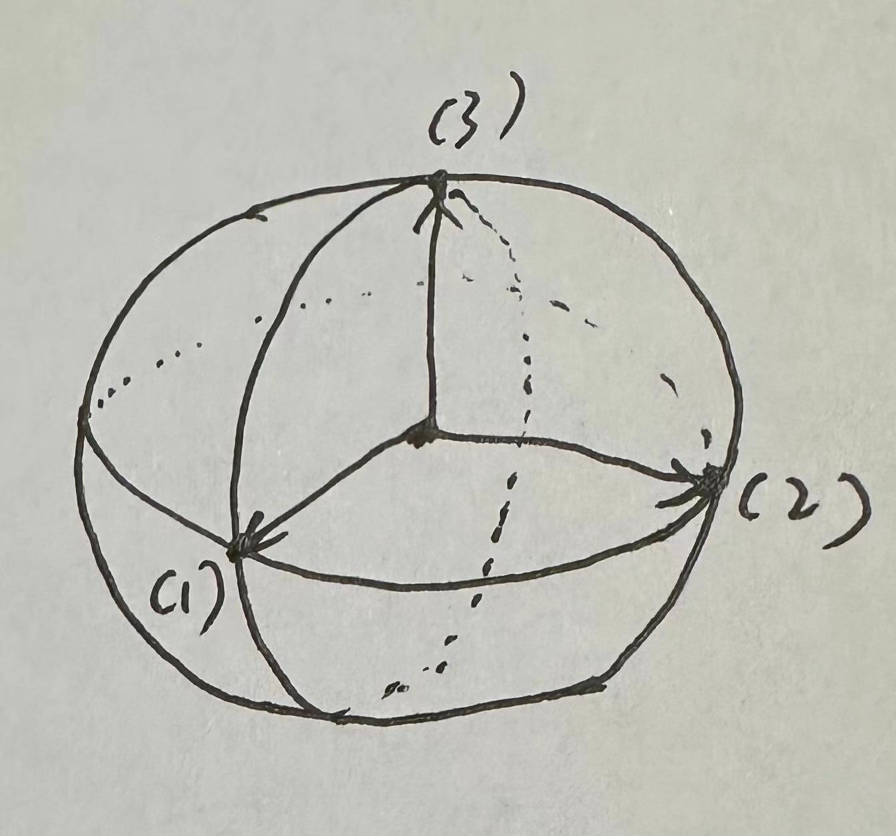
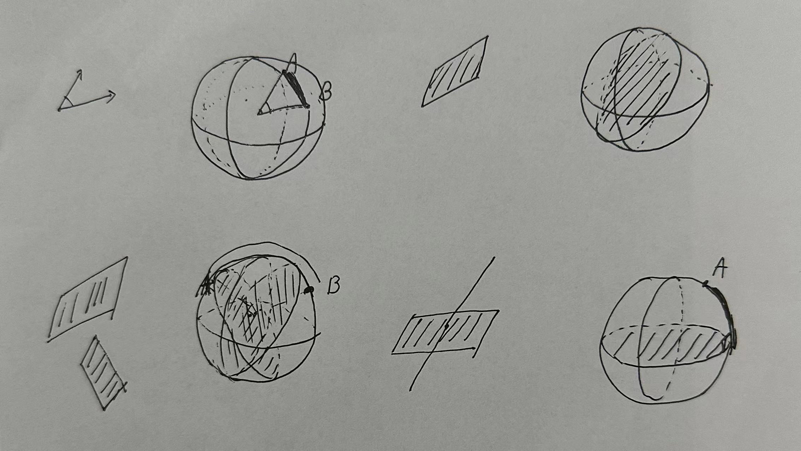
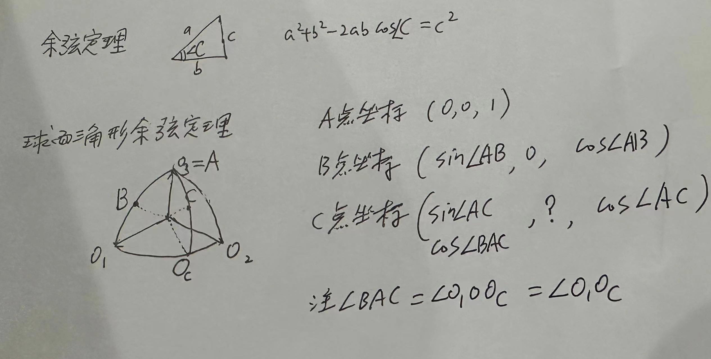

Gauss on surfaces#
1. 辅助球面#
辅助球面是一个单位球面，球面上的点对应了某个方向。球面上有三个特殊点分别对应了三个坐标轴的方向。这三个点或者方向分别命名为 \(O_1, O_2, O_3\)。这三个方向是正交的，也就是两两垂直的。
本想直接用程序或者软件来画示意图的，奈何始终没有找到合适的，看来还是只能上手了。
原文是说球面上的点对应空间中的直线的方向，但是如果这样的话，球面上就有两个点对应同一条直线。所以我感觉原文中的直线可能是说射线？至少是定向了的直线，后面我说成射线吧。
原文是用 (1), (2), (3) 表示三个特殊点，写起来容易混淆，所以改成了 \(O_1, O_2, O_3\) 。

2. 一些球面几何#
两条射线，在球面上对应的点分别是A和B，则射线之间的夹角，对应于A和B之间的 大圆 的弧。
一个平面，对应于一个大圆，该大圆和该平面平行。
两个平面的夹角，对应于大圆之间的夹角，也对应于大圆的 极点 之间的弧。
射线和平面的夹角，是一条弧，从射线对应的点开始，到平面对应的大圆截止，并垂直于该大圆。
可以看出，这里对平面，大圆，弧都没有定向的概念，因此有些模糊。

对于坐标从 \((x,y,z)\) 到 \((x',y',z')\) 的线段，其长度为 \(r\)，其对应点为 L，那么有
球面上的点的坐标之间的关系
因为是单位球面，所以这个就是说球面上的点到球心的距离为1，没什么特别的。
对于球面上两个点A和B，它们之间的夹角满足
这个形式上来看，就是夹角的余弦，等于坐标的点乘，这个怎么去理解呢？
在平面三角形 AOB 中，边长 AO = BO = 1，而对 c=AB有
这里用到了展开，然后根据上面的 平方和归一 的公式进行了合并。
然后用平面三角形的余弦定理得到
球面上的余弦定理
平面上三角形的最重要的定理之一就是所谓的余弦定理，大意是： 设三角形三条边的长度分别是 \(a,b,c\) 且边 a 和 b的夹角是 C ，那么有
对应到球面上是什么呢？因为记住结论公式不好记，可以直接推导。
假设3个顶点是 A,B,C，因为三条边实际上是弧度，和 \(O_1, O_2, O_3\) 的选择其实没有关系，所以可以直接 \(O_3 = A\)，且B放在 \(O_1, O_3\) 对应的大圆上去。如图所示。

这个时候，可以用前面的公式来求 \(\cos \angle B C\) ，有
这就是球面三角形的余弦定理，好像要复杂不少。
暂时没意思，skip
暂时没意思，skip
3. skip#
4. 切平面和法向#
在A点，曲面的法向，对应的球面点为L，其坐标写为